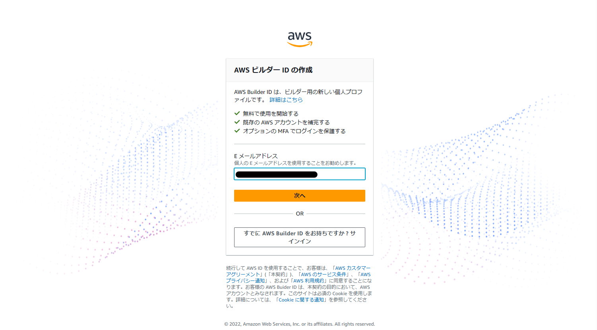
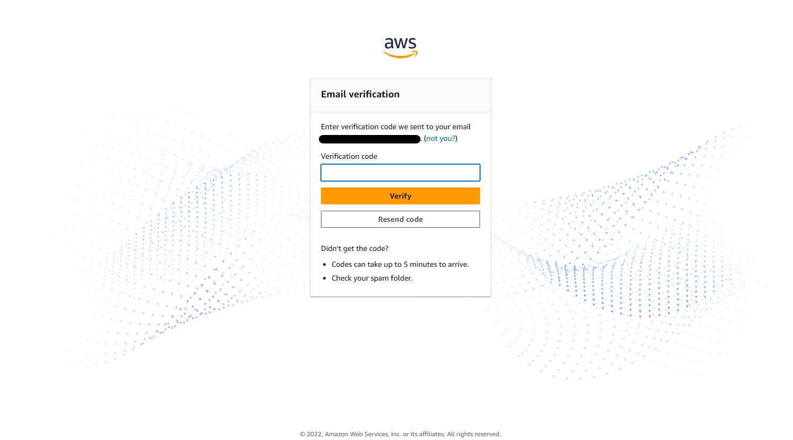

AWS CodeCatalyst¶
概要¶
TBD
用語集¶
日本語は公式な訳ではないことに注意。
ビルダーID (AWS Builder ID)
個人単位に払いだされるID。
組織と紐づかないため、組織間を横断して使用することが可能。
スペース (space)
組織単位で管理する作業スペース。
一意のAWSアカウントと紐づけられ、発生した料金はAWSアカウントに対してなされる。
AWSアカウント毎にフリープランのスペースを1つ、スタンダードプランのスペースを5つ作成することができる。
スペース下に複数のプロジェクトを作成することができる。
プロジェクト (project)
開発プロジェクト毎で管理する単位。
issueやリポジトリ、ワークフローなど必要な機能が含まれている。
プロジェクト下に複数のリポジトリ、ワークフローを作成することができる。
フリープラン / スタンダードプラン (free tier / standard tier)
フリープランは無料のプランで、使用したリソース量が月当たりの規定値を超えた場合はスタンダードプランにアップグレードにする必要がある。
スタンダードプランは有料のプランで、使用したリソース量が月当たりの規定値を超えた場合は追加リソース料金が発生する。
リソース量は人あたりとスペースあたりの2種類があり、スペースあたりの場合はスペース内のユーザー数に関わらず、すべてのユーザーで共有される。
なお、ここでいうプランはCodeCatalystに対してのものであり、デプロイしたリソースについては別途料金が発生する。
コンピューティング時間 (compute minutes)
ワークフローアクションが実行されてから、完了するまでの時間。ユーザーあたり。
開発環境時間 (dev Environment hours)
クラウドベースの開発環境にアクセスした時間。スペースあたり。
制約 (2023.4.25時点)¶
現時点ではオレゴンリージョンでしか使用はできない。
作成したアプリを別リージョンにデプロイすることは可能。
ビルダーID の作成¶
利用には ビルダーID が必要となる。所持していない場合は新規に作成する。
IDに使用するメールアドレスを入力する。AWSでは個人のメールアドレスを推奨している。

ユーザー名を入力する。

入力したメールアドレスに確認コードが送信されるため、届いたコードを入力する。

パスワードを入力する。

正常に作成された場合、スペースの作成画面に遷移するため、引き続きスペースの作成を実施する。